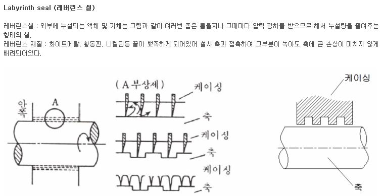

Ref : http://starletzzang.blog.me/220045525836
Ref : http://en.wikipedia.org/wiki/Labyrinth_seal

A labyrinth seal is a type of mechanical seal that provides a tortuous path to help prevent leakage. An example of such a seal is sometimes found within anaxle's bearing to help prevent the leakage of the oil lubricating the bearing.